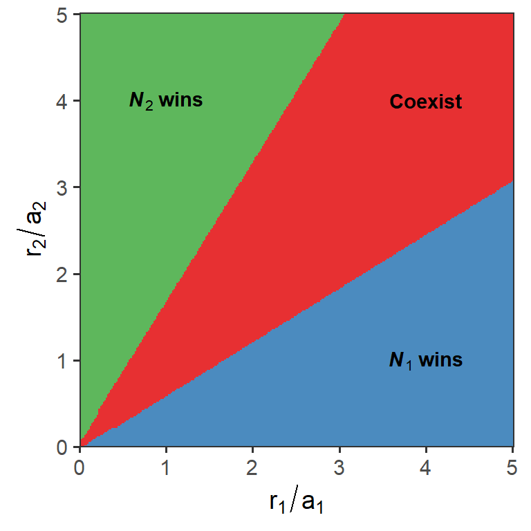

Week 13
Multispecies models of competition: apparent competition
Lecture in a nutshell
- Model derivation
\(\begin{align}\frac {dN_{1}}{dt} = r_{1}N_{1}(1-\frac{N_{1}}{K_{1}})-a_{1}N_{1}P\end{align}\\\)\(\begin{align}\frac {dN_{2}}{dt} = r_{2}N_{2}(1-\frac{N_{2}}{K_{2}})-a_{2}N_{2}P\end{align}\\\)\(\begin{align}\frac {dP}{dt} = e_{1}a_{1}N_{1}P+e_{2}a_{2}N_{2}P-mp\end{align}\)
- Find the equilibrium points:
- \(E_{1} = (\frac{d}{e_{1}a_{1}}, 0, \frac{r_{1}}{a_{1}}(1-\frac{d}{e_{1}a_{1}K_{1}}))\)
- \(E_{2} = (0, \frac{d}{e_{2}a_{2}}, \frac{r_{2}}{a_{2}}(1-\frac{d}{e_{2}a_{2}K_{2}}))\)
- \(E_{c} = (\frac{d-e_{2}a_{2}K_{2}(1-\frac{a_{2}r_{1}}{r_{2}a_{1}})}{e_{1}a_{1}+e_{2}a_{2}\frac{K_{2}a_{2}r_{1}}{K_{1}r_{2}a_{1}}}, \frac{d-e_{1}a_{1}K_{1}(1-\frac{a_{1}r_{2}}{r_{1}a_{2}})}{e_{2}a_{2}+e_{1}a_{2}\frac{K_{1}a_{1}r_{2}}{K_{2}r_{1}a_{2}}}, \frac{r_{1}}{a_{1}}(1-\frac{N_{1}^{*}}{K_{1}}))\)
- Invasion analysis:
- \(N_{2}^{*} \rightarrow E_{1}\): \(IGR_{2} = r_{2}-a_{2}[\frac{r_{1}}{a_{1}}(1-\frac{d}{e_{1}a_{1}K_{1}})] > 0\)
- \(N_{1}^{*} \rightarrow E_{2}\): \(IGR_{1} = r_{1}-a_{1}[\frac{r_{2}}{a_{2}}(1-\frac{d}{e_{2}a_{2}K_{2}})] > 0\)
- Mutual invasion criterion (coexistence): \(\frac{r_{1}}{a_{1}}(1-\frac{d}{e_{1}a_{1}K_{1}})<\frac{r_{2}}{a_{2}}<\frac{r_{1}}{a_{1}}(1-\frac{d}{e_{2}a_{2}K_{2}})^{-1}\)
- Local stability analysis:
- \(J_{E_{1}} = \begin{vmatrix} -\frac{r_{1}}{K_{1}}N_{1}^{*} & 0 & -a_{1}N_{1}^{*}\\0 & r_{2}-a_{2}P^{*} & 0\\e_{1}a_{1}P^{*} & e_{2}a_{2}P^{*} & 0\end{vmatrix}\)
- Characteristic equation: \((r_{2}-a_{2}P^{*}-\lambda)[\lambda^{2}+\frac{r_{1}}{K_{1}}N_{1}^{*}\lambda+e_{1}a_{1}^{2}N_{1}^{*}P^{*}] = 0\)
- \(E_{1}\) is stable if \(r_{2}-a_{2}P^{*}<0\) (i.e., \(IGR_{2} <0\))
- Same procedure for \(E_{2}\)
- \(J_{E_{c}} = \begin{vmatrix} -\frac{r_{1}}{K_{1}}N_{1}^{*} & 0 & -a_{1}N_{1}^{*}\\0 & -\frac{r_{2}}{K_{2}}N_{2}^{*} & -a_{2}N_{2}^{*}\\e_{1}a_{1}P^{*} & e_{2}a_{2}P^{*} & 0\end{vmatrix}\)
- Characteristic equation: \(\lambda^{3}+[\frac{r_{1}}{K_{1}}N_{1}^{*}+\frac{r_{2}}{K_{2}}N_{2}^{*}]\lambda^{2}+[\frac{r_{1}r_{2}}{K_{1}K_{2}}N_{1}^{*}N_{2}^{*}+e_{1}a_{1}^{2}N_{1}^{*}P^{*}+e_{2}a_{2}^{2}N_{2}^{*}P^{*}]\lambda\\+[e_{1}a_{1}^{2}\frac{r_{2}}{K_{2}}+e_{2}a_{2}^{2}\frac{r_{1}}{K_{1}}]N_{1}^{*}N_{2}^{*}P^{*} = 0\)
- Using the Routh–Hurwitz stability criterion to determine the sign of the eigenvalues, we arrive at the conclusion that \(E_{c}\) is locally stable if it is itself feasible.
- \(J_{E_{1}} = \begin{vmatrix} -\frac{r_{1}}{K_{1}}N_{1}^{*} & 0 & -a_{1}N_{1}^{*}\\0 & r_{2}-a_{2}P^{*} & 0\\e_{1}a_{1}P^{*} & e_{2}a_{2}P^{*} & 0\end{vmatrix}\)
- Find the equilibrium points:
Lab demonstration
Here, we are going to visualize the outcomes of apparent competition between two logistically-growing prey species N1 and N2 under linear predator consumption in the r1/a1 - r2/a2 space:
\(\begin{align}\frac {dN_{1}}{dt} = r_{1}N_{1}(1-\frac{N_{1}}{K_{1}})-a_{1}N_{1}P\end{align}\\\)
\(\begin{align}\frac {dN_{2}}{dt} = r_{2}N_{2}(1-\frac{N_{2}}{K_{2}})-a_{2}N_{2}P\end{align}\\\)
\(\begin{align}\frac {dP}{dt} = e_{1}a_{1}N_{1}P+e_{2}a_{2}N_{2}P-mp\end{align}\)
library(tidyverse)
library(deSolve)
### 1. Create a function to evaluate the competition outcome
Apparent_logistic_func <- function(r1, r2){
# specify the model
Apparent_logistic_model <- function(times, state, parms) {
with(as.list(c(state, parms)), {
dN1_dt = r1*N1*(1-N1/K1) - a1*N1*P
dN2_dt = r2*N2*(1-N2/K2) - a2*N2*P
dP_dt = e1*a1*N1*P + e2*a2*N2*P - m*P
return(list(c(dN1_dt, dN2_dt, dP_dt)))
})
}
# model parameters
times <- seq(0, 1000, by = 1)
state <- c(N1 = 5, N2 = 5, P = 1)
parms <- c(r1 = r1, r2 = r2, a1 = 0.35, a2 = 0.35, e1 = 0.4, e2 = 0.5, m = 0.8, K1 = 15, K2 = 12)
# run the ode
pop_size <- ode(func = Apparent_logistic_model, times = times, y = state, parms = parms)
# get the final population size of N1 and N2
N_final <- nrow(na.omit(pop_size)) # remove NAN's
N1_final <- pop_size[N_final, 2]
N2_final <- pop_size[N_final, 3]
print(pop_size[N_final, ])
# determine the outcome
if (N1_final < 1e-5) {
return("N2_win")
} else if (N2_final < 1e-5) {
return("N1_win")
} else {
return("Coexist")
}
}
### 2. Apply the function
# the parameter space to simulate over and the resolution
r_min <- 0
r_max <- 2.5
n <- 300
start_time <- Sys.time() # the starting time of the simulations
comp_out <- expand.grid(r1 = seq(r_min, r_max, length.out = n),
r2 = seq(r_min, r_max, length.out = n)) %>%
mutate(Outcome = map2_chr(r1, r2, Apparent_logistic_func)) # this is where the simulations actually take place!
end_time <- Sys.time() # the ending time of the simulationsend_time - start_time # it might take a while!## Time difference of 35.08638 minslibrary(ggplot2)
### 3. Visualize the competition outcomes in the grids
ggplot(comp_out, aes(xmin = r1/0.5, ymin = r2/0.5,
xmax = r1/0.5 + (r_max-r_min)/(n-1)/0.5, ymax = r2/0.5 + (r_max-r_min)/(n-1)/0.5,
fill = Outcome)) +
geom_rect(show.legend = F, alpha = 0.9) +
geom_abline(intercept = 0, slope = (1-0.8/(0.4*0.35*15)), size = 1.2) +
geom_abline(intercept = 0, slope = (1-0.8/(0.5*0.35*12))^-1, size = 1.2) +
labs(x = expression(r[1]/a[1]), y = expression(r[2]/a[2])) +
scale_x_continuous(limits = c(r_min/0.5, (r_max+(r_max-r_min)/(n-1))/0.5 ), expand = c(0, 0)) +
scale_y_continuous(limits = c(r_min/0.5, (r_max+(r_max-r_min)/(n-1))/0.5 ), expand = c(0, 0)) +
scale_fill_brewer(palette = "Set1") +
theme_bw(base_size = 14) +
theme(panel.grid = element_blank()) +
coord_fixed(ratio = 1) +
annotate(geom = "text", x = 1, y = 4, label = "bold(bolditalic(N[2])~wins)", parse = T) +
annotate(geom = "text", x = 4, y = 4, label = "bold(Coexist)", parse = T) + annotate(geom = "text", x = 4, y = 1, label = "bold(bolditalic(N[1])~wins)", parse = T)
Note that the area of coexistence depends on the slopes of the boundaries, which are \(1-\frac{m_{1}}{e_{1}a_{1}K_{1}}\) between N1 wins and Coexist, and \((1-\frac{m_{2}}{e_{2}a_{2}K_{2}})^{-1}\) between N2 wins and Coexist.
Additional readings
Predation, apparent competition, and the structure of prey communities
Assignments
No assignments this week.